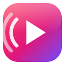
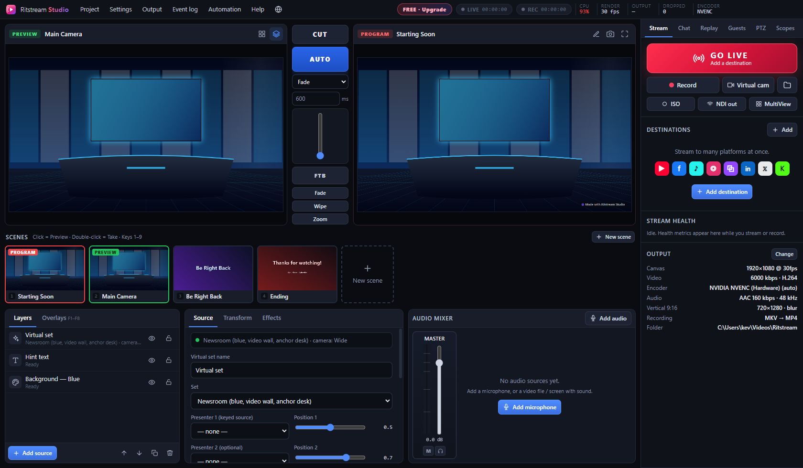
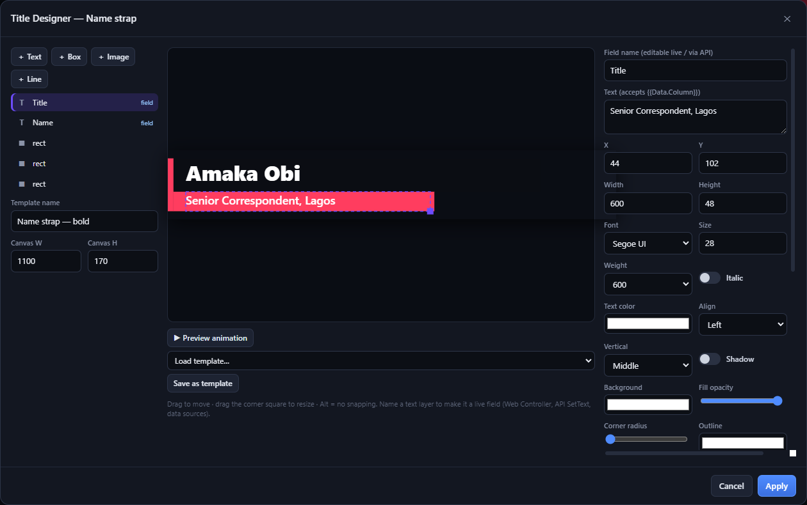
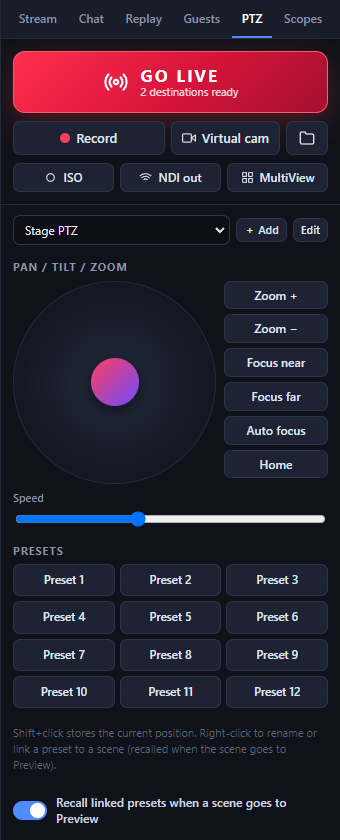

Preview / Program mixer
CUT, AUTO and a manual T-Bar with 18 transitions, including stingers and custom luma wipes. Scenes, 8 overlay channels (F1–F8) and fade to black.

Ritstream StudioA full vision mixer for creators, churches, schools and broadcasters. Switch cameras, add broadcast graphics, bring in remote guests, and go live on YouTube, Facebook, TikTok, Instagram and Twitch — all at once, from one encode.
Free to download. The free version streams to one platform in 720p. Pro and Studio plans unlock everything, bought inside the app.

Go live on
Built like a broadcast switcher, simple enough for your first stream.
CUT, AUTO and a manual T-Bar with 18 transitions, including stingers and custom luma wipes. Scenes, 8 overlay channels (F1–F8) and fade to black.
One hardware encode (NVENC, Quick Sync, AMF or VideoToolbox, up to 4K) is copied to every platform, so extra destinations cost no CPU. Each one reconnects on its own if it drops.
A second, automatically framed vertical stream for TikTok, Reels and Shorts, sent at the same time as your landscape show.
Over 90 one-click templates: lower thirds in 14 styles with animated entrances, news tickers, neon, gold and 3D text, countdown rings, and scoreboards with game clocks. Plus web-page overlays and on-screen chat comments.
Play, pause, skip, frame-step, rewind and fast-forward any video from the Preview and Program monitors, with elapsed and remaining time on screen. Cue the next playlist video in Preview while the current one stays on air.
Webcams, capture cards (HDMI and SDI), screens and windows, NDI®, IP cameras over RTSP, SRT and RTMP from phones and encoders, video playlists and PowerPoint/Keynote decks.
Slow motion from up to 8 camera angles, with mark in/out, saved events, highlight playlists and one-click MP4 export.
Record while you stream, at almost no extra cost. MP4, MKV, MOV, AVI and MPEG-2, or audio-only WAV, MP3 and M4A. MultiCorder records every camera to its own file.
Twitch, YouTube, Facebook and Kick comments in one feed. Click once to put a comment on screen.
The tools of a full broadcast suite, in one app.
Invite up to 8 guests: they open a link on a phone or computer, with nothing to install. Their camera, microphone and screen share arrive as sources. Each guest sees the Program return feed, hears everything except their own voice (mix-minus), and gets an ON AIR light when they're live.
Design animated titles from text, box, image and line layers, each with its own slide, wipe, pop or typewriter animation. Name a text layer and it becomes a live field you can edit from a tablet or the API. You can also feed it from Excel, CSV, JSON, XML or Google Sheets with {{Sheet.Column}}.

Put keyed presenters in a newsroom, talk-show, tech or sports set. A video wall can show any source, and four virtual cameras move between angles with parallax, reflections and shadows.
Pan, tilt, zoom, focus and 12 presets for VISCA-over-IP cameras such as PTZOptics, Sony, Panasonic, Avonic and BirdDog. Link presets to scenes so they recall automatically.
Run the show from any phone or tablet: switcher, titles, audio, replay, PTZ and the telestrator. HTTP and TCP APIs work with Stream Deck via Bitfocus Companion.
Chain actions with waits and triggers: time of day, scene changes, go-live. Map any key, X-Keys pad or MIDI controller to any function, with Learn.
GPU lift/gamma/gain, exposure, white balance, sharpening and deinterlacing. Check your picture with a waveform, RGB parade, vectorscope and histogram.
EQ, noise gate, compressor and delay on every channel, two aux buses with their own outputs, audio-follow-video, and a broadcast limiter.
Receive and send NDI over your network. A MultiView monitor shows Preview, Program and 8 tiles with tally, meters and the clock.
Draw circles, arrows and freehand marks on air, from the Program monitor or a tablet. Strokes can fade out automatically.
Drop in a .psd and every visible layer becomes its own graphic, exactly where you placed it.

Start free. Upgrade inside the app (Help → License & upgrade): pay in your own currency, and Ritstream activates itself in seconds. Monthly, quarterly, yearly and lifetime plans are available.
| Free | Pro | Studio | |
|---|---|---|---|
| Streaming destinations at once | 1 | Unlimited | Unlimited |
| Output resolution | 720p | 1080p | 4K |
| Watermark | Yes | No | No |
| Mixer, scenes, graphics, recording | ✓ | ✓ | ✓ |
| Smart vertical 9:16, instant replay, live chat, web sources, virtual webcam | — | ✓ | ✓ |
| IP / SRT / RTMP inputs, Web Controller, API, MIDI, macros, data sources, PTZ, virtual sets | — | ✓ | ✓ |
| Remote guests, MultiCorder ISO, 8-angle replay, NDI in & out | — | — | ✓ |
All versions and release notes: GitHub Releases.
Windows 10/11 64-bit or macOS 12+, a quad-core CPU, 8 GB RAM, and a GPU with hardware video encoding (NVIDIA, Intel, AMD or Apple). Upload speed at least 1.5× your total stream bitrate.
Windows may show “Windows protected your PC”: click More info → Run anyway. On a Mac, if it won’t open, go to System Settings → Privacy & Security → Open Anyway (once). Optional extras: free NDI Tools for NDI, and OBS Studio for the virtual-camera driver on Windows.
Yes. Add as many destinations as your plan allows and press GO LIVE. Ritstream encodes once and sends a copy to each platform, so CPU use doesn't grow with the number of destinations. You can also start or stop single platforms while live.
Open the Guests tab, press Start and copy the invite link. Guests open it in Chrome, Edge, Firefox or Safari, on a phone or computer, and allow their camera. They appear as a source you can put in any scene.
Any webcam or capture card your computer recognises works, including HDMI and SDI cards. IP cameras connect over RTSP, SRT or RTMP, NDI devices over NDI, and PTZ cameras that speak VISCA over IP can be controlled directly.
Yes. Turn on Settings → Remote control to get a Web Controller for phones and tablets, plus HTTP and TCP APIs. Stream Deck works through Bitfocus Companion. MIDI controllers and keyboards (including X-Keys) map to any function in Automation.
In the app, open Help → License & upgrade (or click the FREE badge), choose a plan and pay in your currency. The app activates itself automatically. You can also paste an activation code by hand.
English, Français, Español, Português, Deutsch, العربية (with a right-to-left layout), 中文 and हिन्दी.